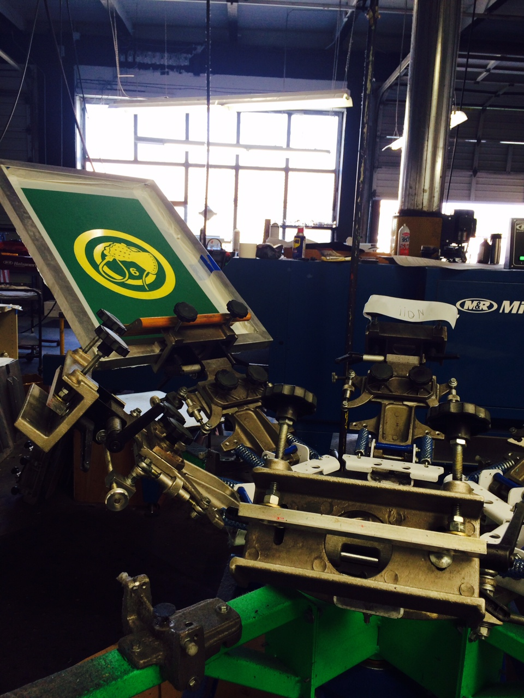

Setup.
Using a t-square center and balance the screen image on your platen. Check your of contact and make sure you have a enough from the top or bottom of the stencil for you squeege to start a good stroke. Grab a good clean squeege, tape up you hatch marks/targets and we're off!
